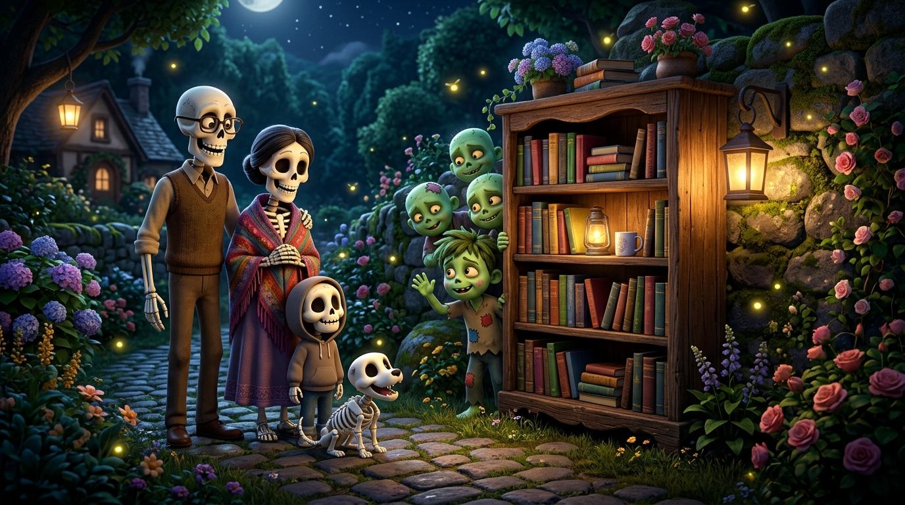

La Libreria Misteriosa
C'era una volta una simpatica e allegra famiglia di scheletri dalle candide ossa bianche: papà scheletro con il suo cilindro elegante, mamma scheletro col cappello fiorito, il piccolo scheletrino curioso e il loro fedelissimo cagnolino scheletro che scodinzolava felice facendo clic-clac con la coda.
Una sera decisero di uscire tutti insieme per una bella passeggiata nel buio buio giardino. Là fuori c'era un buio fitto, vellutato e misterioso, illuminato soltanto dal bagliore azzurro della luna e da qualche lucciola dorata che danzava tra i cespugli.
Cammina cammina nel buio buio giardino, proprio in mezzo agli alberi spuntò all'improvviso una grandissima libreria di legno illuminata da lanterne calde! E dentro quella libreria, tra gli scaffali pieni di libri antichi, c'erano tantissimi zombie zombie che bussavano timidamente ai vetri.